Top picks of the month
Chamomile

- Skin inflammation
- Muscle tension
- Promotes sleep
Geranium

- Menstrual cramps
- Antidepressant
- Acne treatment
Jasmine

- Aphrodisiac
- Antidepressant
- Antiseptic
Lavender

- Antioxidant
- Diabetes
- Stress reduction
Neroli

- Reduces pain
- Scar treatment
- Stress reduction
Rose

- Antioxidant
- Antimicrobial
- Mood booster
Lemon
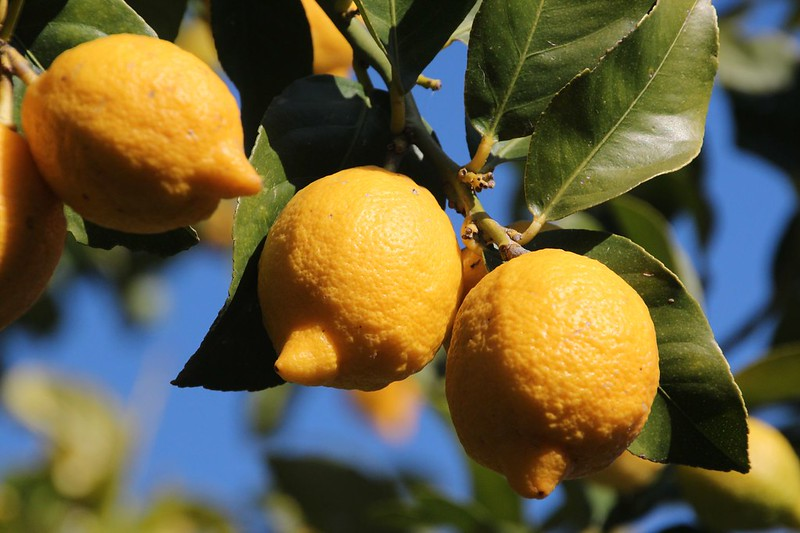
- Stress reduction
- Acne treatment
- Mood booster
Orange
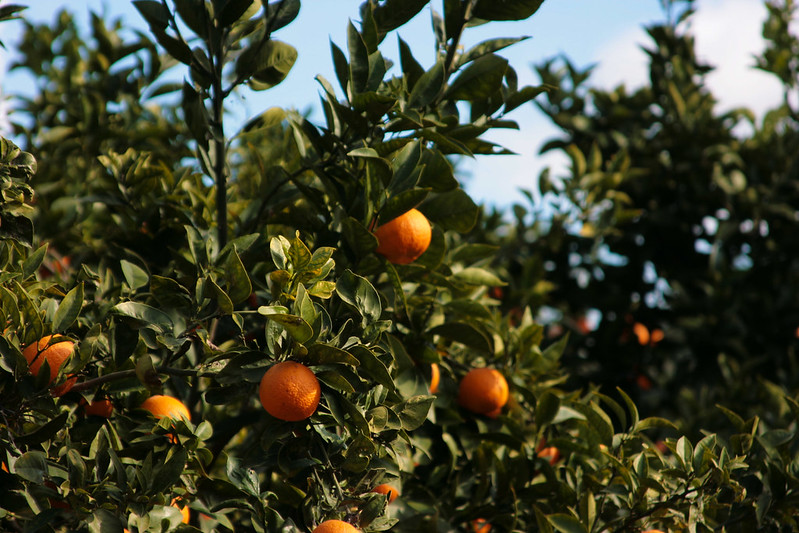
- Mood booster
- Stomach pain
- Natural household cleaner
Lime
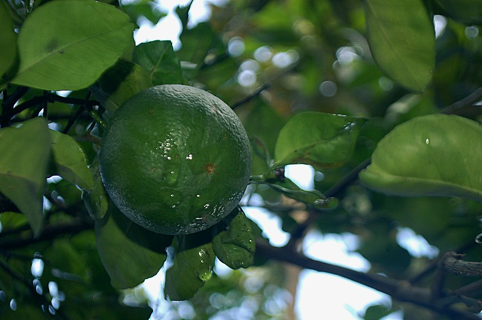
- Air purifier
- Cold and flu
- Stress reduction
Tangerine
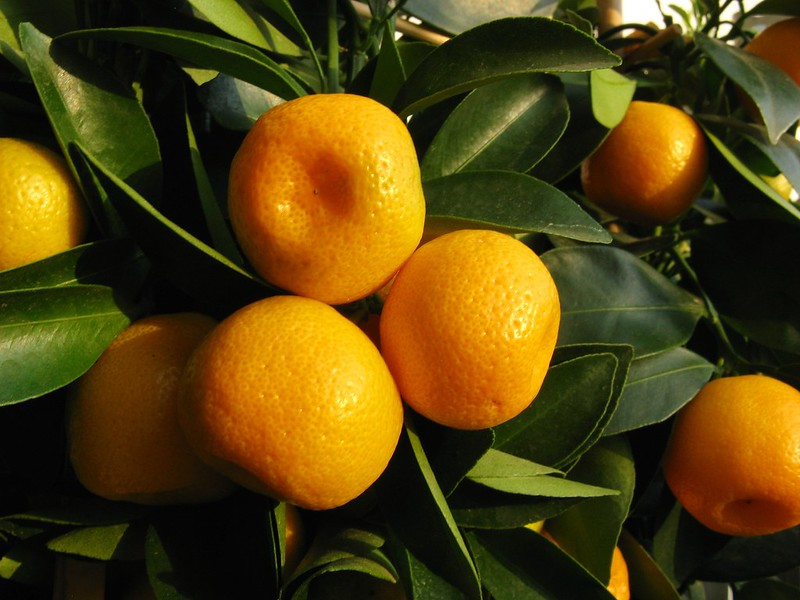
- Focus enchancement
- Weight loss
- Mosquito repellent
Cintronella
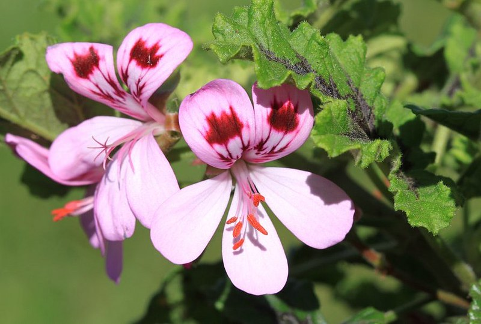
- Insect repellent
- Antifungal
- Mood booster
Lemongrass
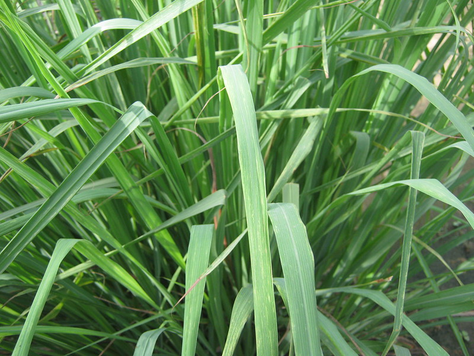
- Antibacterial
- Diarrhea relievement
- Antioxidant
Cypress
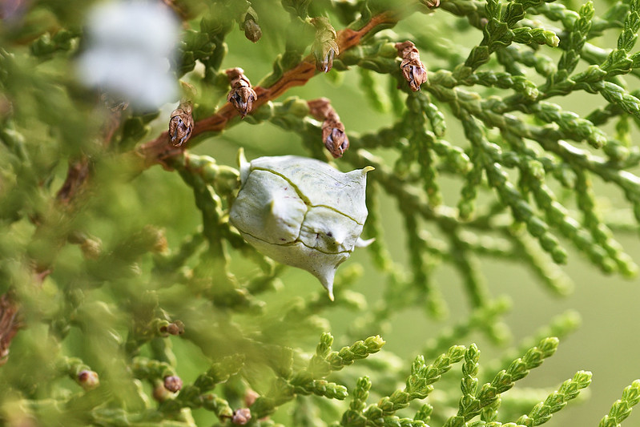
- Mood booster
- Promotes deep breathing
Juniper Berry
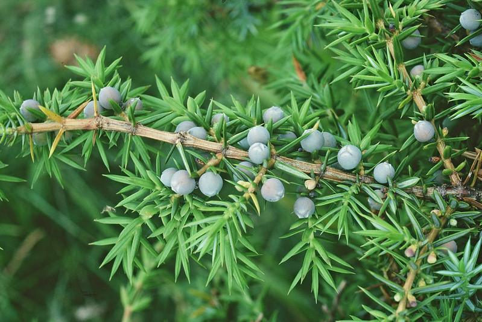
- Mental health
- Calming
- Dermatitis treatment
Pine
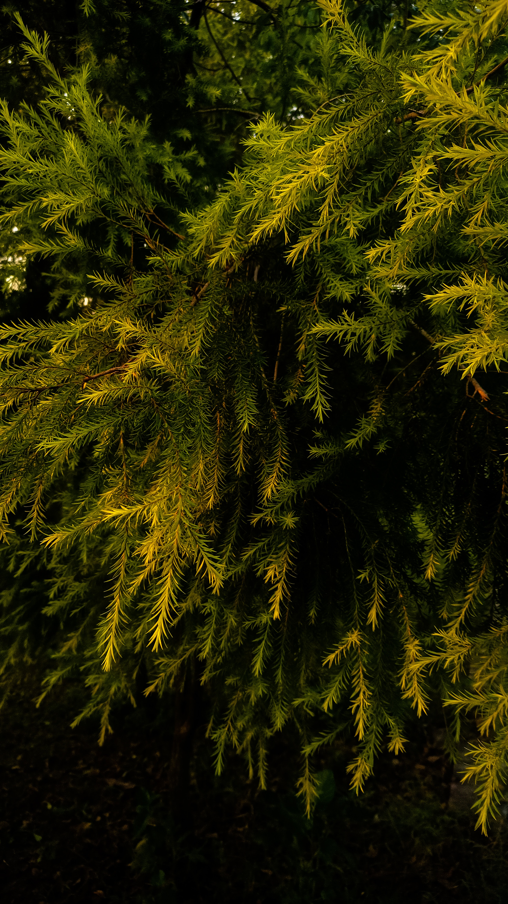
- Skin inflammation
- Antiaging
- Circulation enchancement
Sandalwood
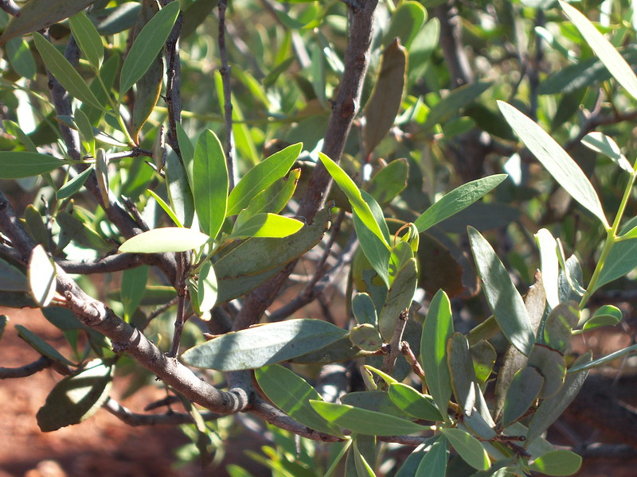
- Moisturizing
- Stress reduction
- Antiaging
Fir
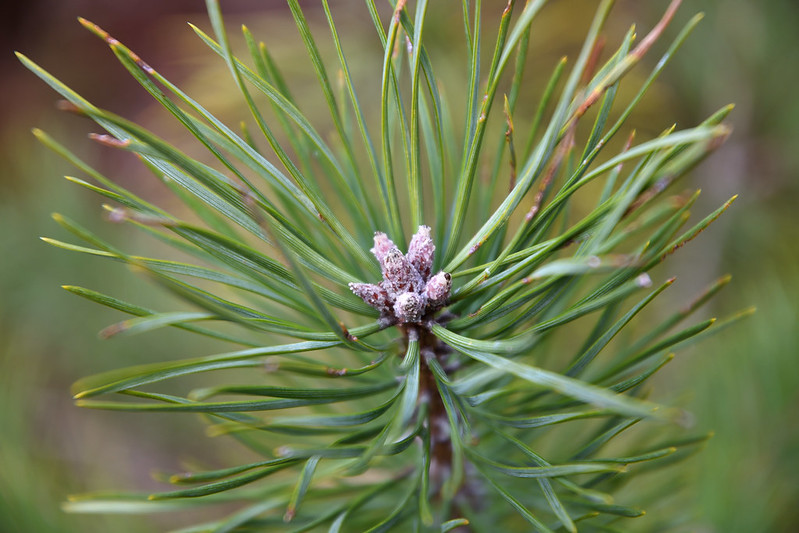
- Skin inflammation
- Stress reduction
- Arthritis pain
Cedarwood
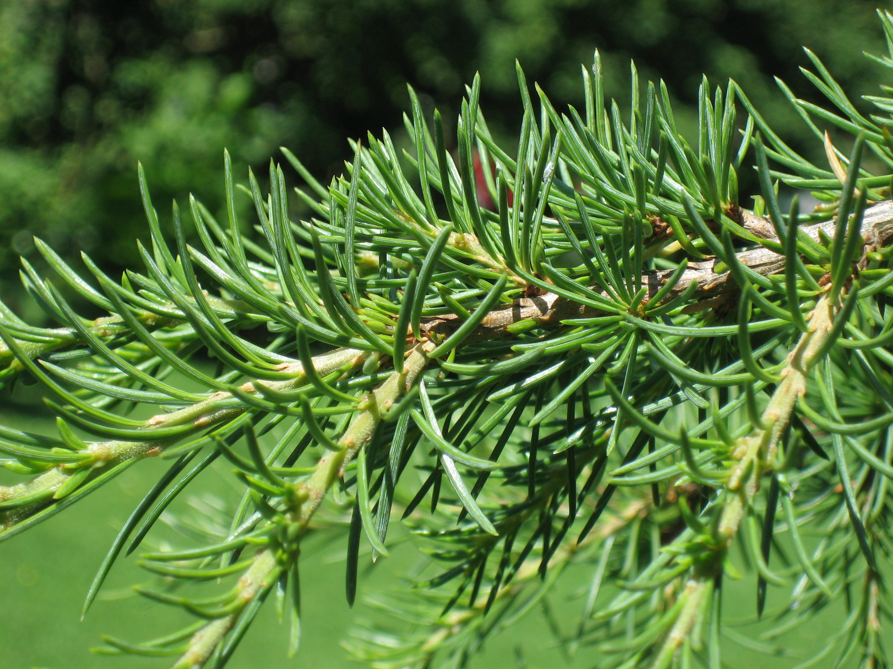
- Pain relief
- Promotes sleep
- Antibacterial
Nothing brings to life again a forgotten memory
- Christopher Poindexter
like a fragnance.